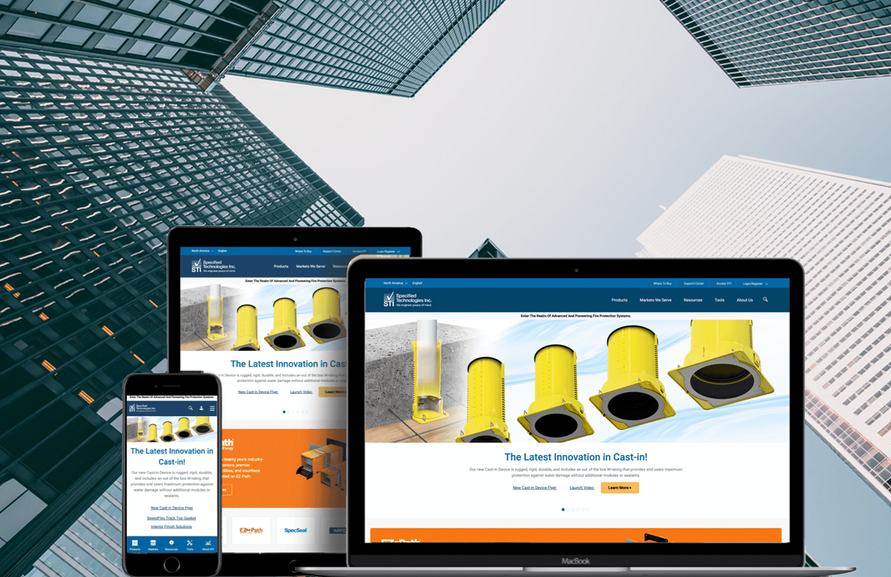

Role
Visual & UI
design
design
STI is the global leader in firestop and fire-rated pathway systems — but its digital brand felt dated next to the engineering inside the products. I rebuilt the visual layer for the HubSpot relaunch: a refreshed logo lockup, a disciplined color system around STI's navy and signature firestop red, a clearer type scale, and a graphics language carried across every screen.

STI's products are precise, tested and trusted — but the old site read flat and inconsistent: a thin logo, ad-hoc blues, cramped type and clip-art iconography that undercut the credibility of a life-safety manufacturer.
The visual brief was to build a system, not a skin — components and rules that the STI team could apply themselves inside HubSpot, anchored in the equity they already had: the deep STI navy and the unmistakable firestop red.
The wordmark was rebuilt into a compact, confident lockup: a square "STI" mark that holds up at favicon size, paired with a spaced "FIRESTOP" descriptor. It keeps the brand's blue-and-red equity while gaining structure and a clear system for placement.
The badge reads clearly from billboard to 16px favicon — no thin strokes to drop out.
Minimum padding equal to the height of the "S" keeps the mark uncrowded everywhere.
Defined treatments on navy, red, light and photographic backgrounds.
The old site drifted across half a dozen unrelated blues. The new palette is built on two anchors — STI Navy and Firestop Red — with a disciplined set of tints and neutrals for UI, all tuned to pass AA contrast on web.
A single, engineered sans does the heavy lifting — geometric enough to feel technical, open enough to stay legible across dense spec tables. A mono is reserved for product codes and data labels.
Clip-art was replaced with a geometric icon set on a consistent grid and stroke — navy as the structural line, red as the single point of emphasis. A pair of brand patterns gives marketing surfaces texture without competing with product photography.
The brand applied end-to-end across the responsive HubSpot build — desktop browsing and search on the left, the mobile product experience on the right. Drop in the real screens.
It streamlined communication with customers and simplified their search for information — a 76% increase from direct searches and 27% from organic within the first 30 days.